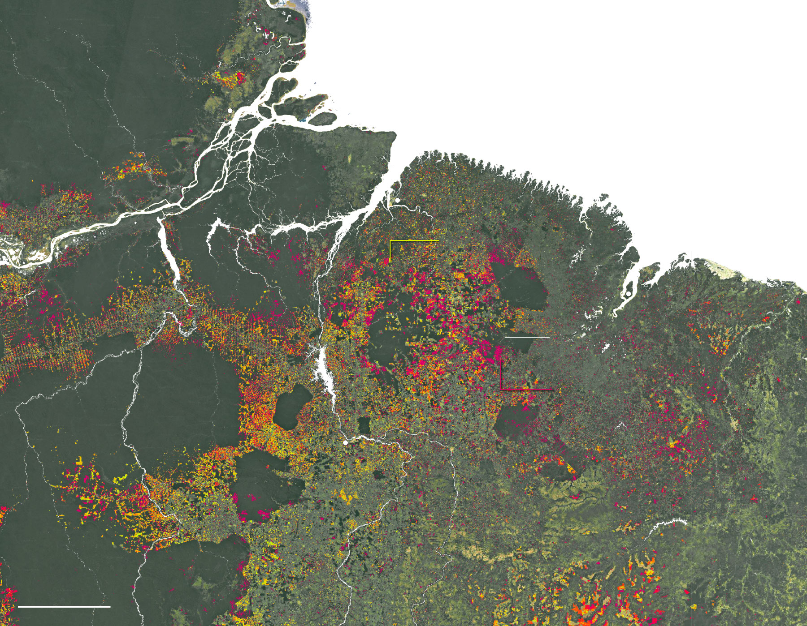
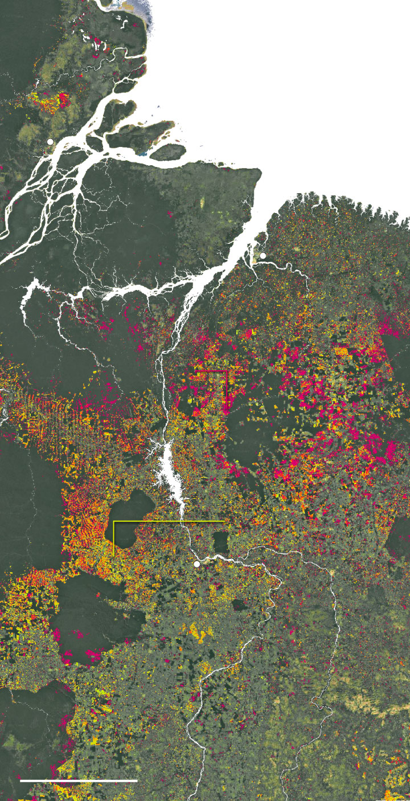
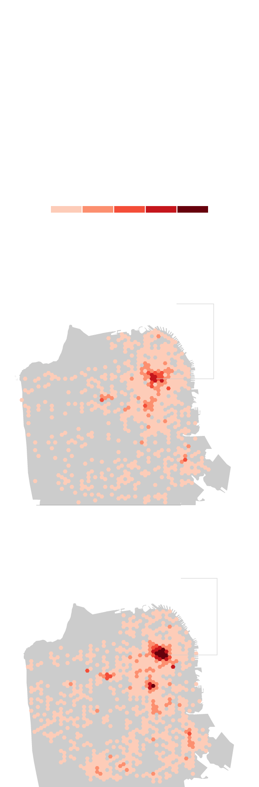
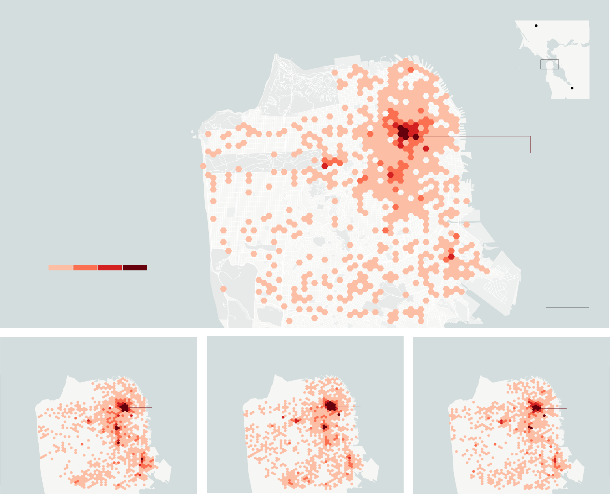
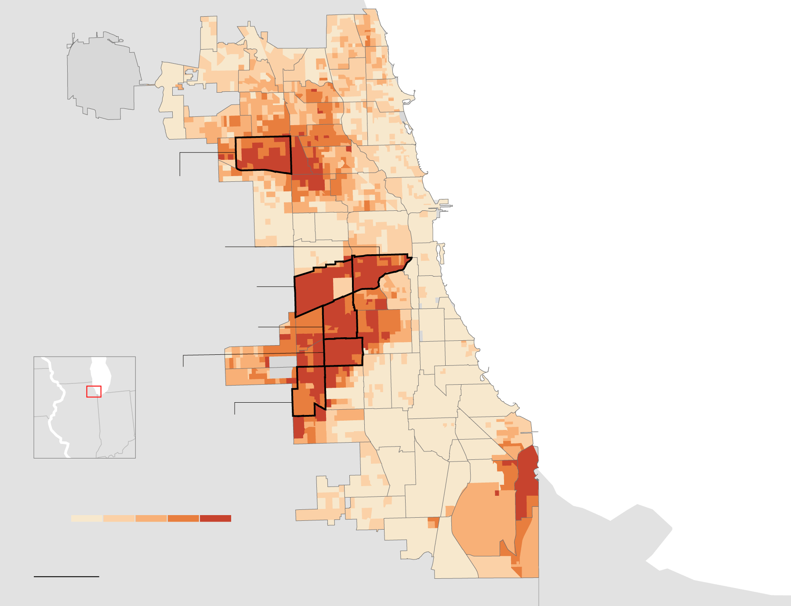
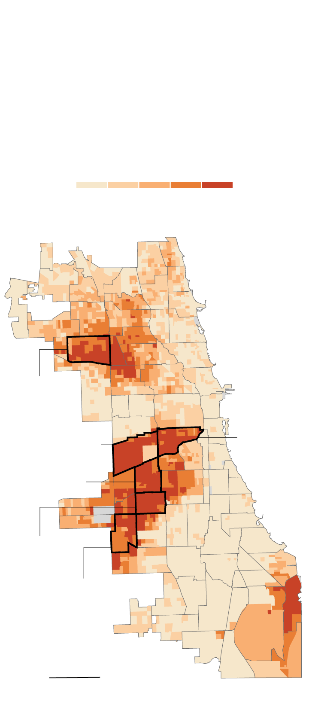
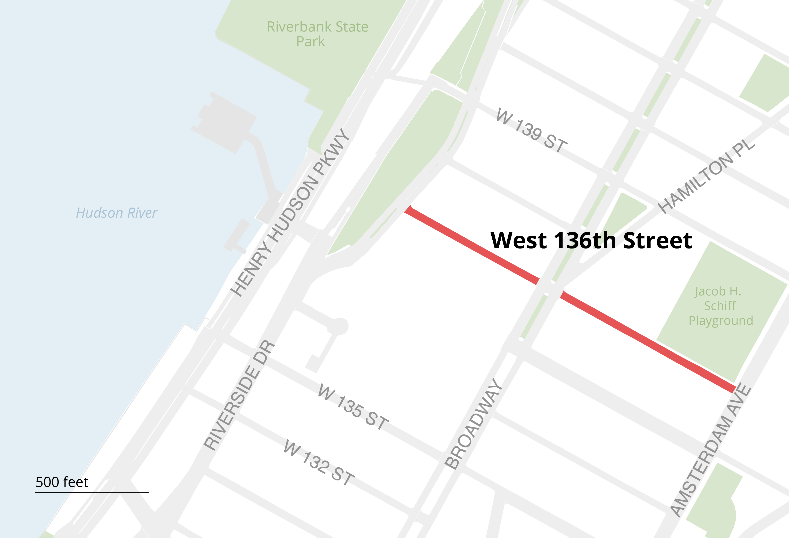

Cartography
Responsive static maps designed for Jeremy White's mapping course at Columbia University.
Amazon rainforest
I used Google Earth Engine to download satellite images of Brazil and then worked with raster data to look at forest loss along the country's eastern coast from 2001 to 2018.
Tools: Google Earth Engine, QGIS, HTML, CSS, JavaScript, Adobe Photoshop, Adobe Illustrator, ai2html.

Deforestation in the Amazon has slowed, but it still continues
In the State of Maranhão, one of Brazil's smallest and poorest states, only 25 percent of the original forest cover remains, and deforestation persists.
Today, illegal logging in the Gurupi Biological Reserve and the surrounding indigenous territories
is still common.
Forest loss from 2001 to 2014
Gurupi Biological Reserve
Forest loss from
2015 to 2018
S T A T E O F
M A R A N H Ã O
Kayapó Indigenous Territory

In the State of Maranhão, one of Brazil's smallest and poorest states, only 25 percent of the original forest cover remains.
Amazon deforestation has slowed but continues
Forest loss from
2015 to 2018
Forest loss from 2001 to 2014
S T A T E O F
M A R A N H Ã O
San Francisco
I used small multiples of hexbin maps to show a downtrend trend in drug-related arrests in San Francisco.
Tools: HTML, CSS, JavaScript, Python, Adobe Illustrator, ai2html, QGIS.

Drug arrests tumble in years since San Francisco police shifted priorities
In 2011, former police chief George Gascón downsized the narcotics unit, focusing on violent crime.
533 arrests
in Tenderloin
Presidio of
San Francisco

Drug arrests tumble in years since San Francisco police shifted focus to violent crime
While the city’s Tenderloin neighborhood is notoriously drug plagued, arrests have fallen since 2011.
That year, former police chief George Gascón downsized the narcotics unit, focusing resources on violent crime.
Presidio of
San Francisco
533 arrests
in Tenderloin
Chicago
A choropleth map of Chicago, one of the most segregated cities in the United States. The map depicts the city's Hispanic population according to census data.
Tools: HTML, CSS, JavaScript Adobe Illustrator, ai2html, QGIS.

Chicago’s Hispanic population is the largest minority group in the city
The Latino population has increased substantially and is widely distributed throughout Chicago, with Hispanics making up at least 80 percent of the population in six neighborhoods.
While Hispanics have passed Blacks, the city’s second-largest ethnic group, a new report by the University of Illinois at Chicago found that education, jobs, health care and other city services are lagging behind.
O’HARE
INTERNATIONAL
AIRPORT

Chicago’s Hispanic population is the largest minority group in the city
Latinos make up at least 80 percent of the population in six neighborhoods.
New York
A street-level map of New York City to accompany an article about noise complaints on West 136th Street.
Tools: HTML, CSS, Adobe Illustrator, QGIS.
